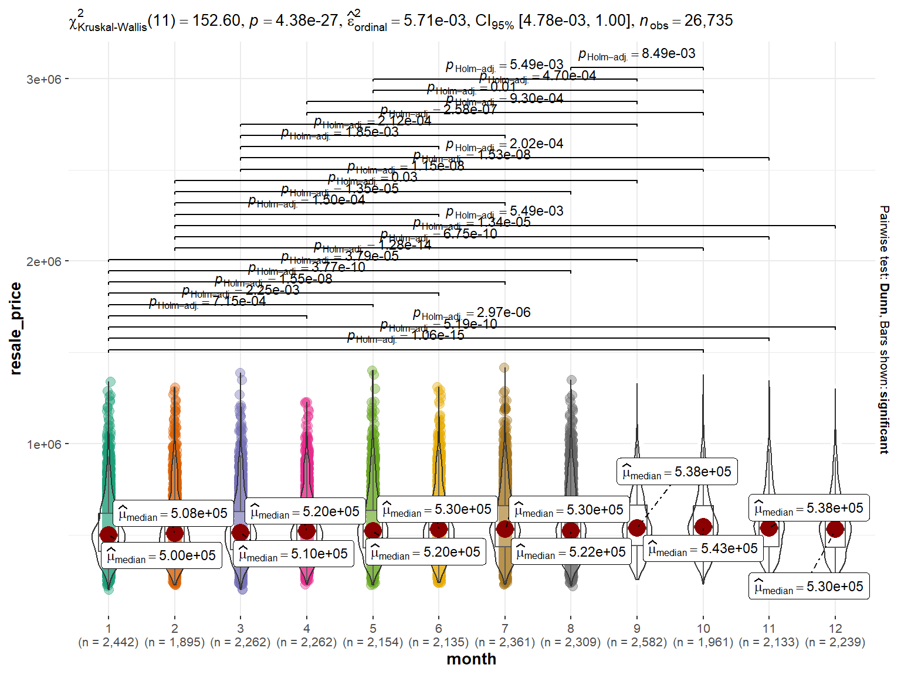
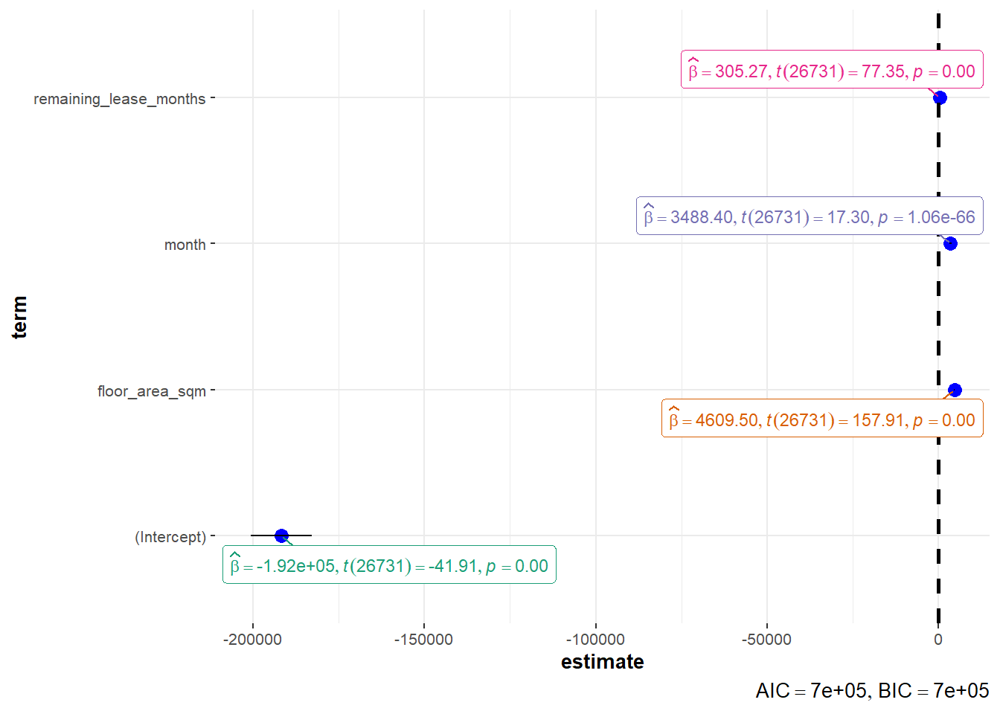

pacman::p_load(plotly, DT, patchwork, tidyverse, ggstatsplot, readxl, performance, parameters, see, gtsummary, crosstalk, ggdist, gganimate, reshape2, ggridges, ungeviz)Take Home Exercise 03
Dataset and Preparation
The dataset to be examined in this Visual Analytics assignment is taken from Singstat on the Resale Flat prices (based on registration date) in Singapore for the period of Y2022.
Upon checking the dataset, the following columns are available to be used in the analysis:
| Variable Name | Description of Variable |
|---|---|
| month | Datetime (Month) “YYYY-MM” of the associated resale price |
| town | Area where the resale flat is located in |
| flat_type | Type of flat eg. 3 room or 4 room |
| block | Block number of the resale flat |
| street_name | Street where the resale flat is located |
| storey_range | Range of floors applicable for the resale price |
| floor_area_sqm | area in sqm of the flat |
| flat_model | Indication of whether flat is ‘Improved’ or ‘New Generation’ |
| lease_commence_date | The year in which the lease started |
| remaining_lease | Remaining lease in years and months |
| resale_price | Price of the resale flat in SGD |
In order to use the data provided more effectively, the following cleaning steps and variable conversions were done using Excel first before application in R to extract and apply the variables in the visualization.
| S/N | Variable | Transformation Step |
|---|---|---|
| 1 | month | Split the year and the month into 2 new columns for easier reference to the time period ‘month’ |
| 2 | remaining_lease | Transformed to months instead of years and months and renamed variable to ‘remaining_lease_months’ |
Approach and Method
This analytical visualization will attempt to answer the following questions:
Does resale price have a linear relationship with remaining lease months?
Is resale price affected by the month of the year?
Does the storey (eg. higher vs lower floors) matter and affect the resale price?
Can a model of factors that influence price be built?
Preparing the Visualizations
data <- read_csv("resale-flat-prices/resale-flat-prices-based-on-registration-date-from-jan-2017-onwards-cleaned.csv")
# Filter for Y2022 data only
resale_flat <- filter(data, year == 2022)(A) Does resale price have a linear relationship with remaining lease months?
To examine this, we apply the visualization for significant test of correlation between the resale flat prices and the remaining lease months variable to see if there is a relationship. Using R, ggscatterstats can be used to obtain the correlation plot between resale flat prices and remaining lease months directly.
ggscatterstats(
data = resale_flat,
x = remaining_lease_months,
y = resale_price,
marginal = FALSE,
xlab = 'Remaining Lease (Months)',
ylab = 'Resale Price'
)(B) Is resale price affected by the month of the year?
To answer this question, we first plot multi-ridge plots to determine the resale flat price distribution across town areas to have an idea of how different they could be.
ggplot(resale_flat,
aes(x = resale_price, y = town, fill =town)) +
geom_density_ridges(alpha = 0.5) +
theme_ridges() +
labs("Resale Flat Prices Across Towns over the Year 2022") +
theme(legend.position = "none") +
labs(x = "Resale Flat Prices in Y2022", y = "Town") This is followed by plotting a stacked bar plot across the months in Y2022 to visualize the distribution of Resale Price according to the town areas.
ggplot(resale_flat,
aes(x =as.factor(month), resale_price, color = town)) +
geom_bar(stat = "identity") +
labs(x = "Months of the Year 2022", y = "Resale Flat Price")Following which, to determine if there are significant differences between groups (ie months), we perfrom the oneway ANOVA test using ggbetweenstats for non-parametric (assume unknown and unequal variance).
ggbetweenstats(
data = resale_flat,
x = month,
y = resale_price,
type = "np",
messages = FALSE
)
(C) Does the storey (eg. higher vs lower floors) matter and affect the resale price?
To observe the distribution of the prices, a bar plot diagram is used to check the distribution. For this, we apply ggplot's barplot to have an idea of the mean resale price trend across the different storey_ranges.
ggplot(resale_flat,
aes(x =storey_range, y = resale_price, color = storey_range)) +
geom_bar(position = "dodge",
stat = "summary",
fun = "mean") +
labs(x = "Storey Range", y = "Resale Flat Price")Oneway ANOVA Test was conducted between storey ranges and the resale price using ggbetweenstats.
ggbetweenstats(
data = resale_flat,
x = storey_range,
y = resale_price,
type = "p",
mean.ci = TRUE,
pairwise.comparisons = TRUE,
pairwise.display = "s",
p.adjust.method = "fdr",
messages = FALSE
)To provide visibility about the uncertainty of point estimates for resale price across storey range, we can use ggdist package and specifically stat_pointinterval() to have a sensing of the uncertainty.
resale_flat %>%
ggplot(aes(x = storey_range,
y = resale_price)) +
stat_gradientinterval(
fill = "skyblue",
show.legend = TRUE
) + #<<
labs(
title = "Visualising confidence intervals of mean resale price across storey range",
subtitle = "Mean Point + Multiple-interval plot")(D) Can a model of factors that influence price be built?
To examine this, we first apply a multiple linear regression model to see if a model can be constructed using the numerical variables in our data set.
model <- lm(resale_price ~ floor_area_sqm + month + lease_commence_date + remaining_lease_months, data = resale_flat)
model
Call:
lm(formula = resale_price ~ floor_area_sqm + month + lease_commence_date +
remaining_lease_months, data = resale_flat)
Coefficients:
(Intercept) floor_area_sqm month
-2.593e+07 4.619e+03 2.443e+03
lease_commence_date remaining_lease_months
1.339e+04 -8.075e+02 We check for multi-collinearity as follows and find that both ‘lease_commence_date’ and ‘remaining_lease_months’ have high degree of collinearity and we should re-run the model again while dropping one of these variables
check_c <- check_collinearity(model)
plot(check_c)To complete model diagnostic checks, run check_model on the model to obtain an overall view of diagnostic parameters like Homogeity of Variance and Normality of Residuals:
check_model(model)Re-run of Model with ‘lease_commence_date’ dropped:
model_2 <- lm(resale_price ~ floor_area_sqm + month + remaining_lease_months, data = resale_flat)
model_2
Call:
lm(formula = resale_price ~ floor_area_sqm + month + remaining_lease_months,
data = resale_flat)
Coefficients:
(Intercept) floor_area_sqm month
-191680.6 4609.5 3488.4
remaining_lease_months
305.3 summary(model_2)
Call:
lm(formula = resale_price ~ floor_area_sqm + month + remaining_lease_months,
data = resale_flat)
Residuals:
Min 1Q Median 3Q Max
-256649 -74795 -27172 36097 778194
Coefficients:
Estimate Std. Error t value Pr(>|t|)
(Intercept) -1.917e+05 4.574e+03 -41.91 <2e-16 ***
floor_area_sqm 4.610e+03 2.919e+01 157.91 <2e-16 ***
month 3.488e+03 2.016e+02 17.30 <2e-16 ***
remaining_lease_months 3.053e+02 3.947e+00 77.34 <2e-16 ***
---
Signif. codes: 0 '***' 0.001 '**' 0.01 '*' 0.05 '.' 0.1 ' ' 1
Residual standard error: 113400 on 26731 degrees of freedom
Multiple R-squared: 0.5571, Adjusted R-squared: 0.5571
F-statistic: 1.121e+04 on 3 and 26731 DF, p-value: < 2.2e-16ggcoefstats(model_2, output ="plot")
p-values in the model are significant and the F-value is also large enough to indicate that the model is stable. Plot to visualize the model parameters using ggcoefstats to see where the values lie with respect to the terms.
Summary of Findings
How does the resale price vary with the remaining lease years in general?
- We need to determine if the linear relationship in the sample data is strong enough to model the relationship in the population. Hence based on the graphical result, p-value is 0 shows that the correlation coefficient is not significant, hence there is insufficient evidence to prove that a significant linear relationship exists between x & y.
Does the time of the year affect the resale price of flats in a town?
From the distribution shown in the early visualizations, resale price seems to peak in September while hits the lowest in February.
From the Oneway Anova Test results, we observe that January, February, September and October have the higher number of significantly different relationships with other months. This shows that there are indeed differences in Resale prices in certain months of the year. The caveat here would be to also extend this analysis to compare with same months of different years.
Does the storey (eg. higher vs lower floors) matter and affect the resale price?
From the barplot distribution, we see that there are already a trend in the mean resale price which appears to be in an ascending trend as the storey range increases (getting to higher levels).
The ANOVA test results also indicate the differences explicitly with the results of p-values showing up as significant between many pairs of storey_ranges. There is evidence to show that storey level can affect the price of the resale flat in general.
Can a model of factors that influence price be built?
- A model with 3 variables was built (Floor area, Month and Remaining Lease Months) with significant p-value results which can determine an inductive value of Resale Price.